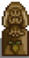
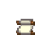

Mastery Cave
This page or section contains unmarked spoilers from update 1.6 of Stardew Valley. Players may want to avoid or be cautious toward reading this article/section. |
| Mastery Cave | |
 | |
 | |
| Closed: | Never |
| Address: | Cindersap Forest |
| Occupants: | None |
The Mastery Cave is an area located in Cindersap Forest. It is unlocked after the player has achieved level 10 in all 5 skills. It can be accessed right after the player reaches level 10 on the fifth skill; there is no need to wait until the next day. Inside, the player finds a letter from Grandpa in the southeast corner, a pedestal in the middle of the cave that reads "The Last Path" and displays the mastery progress bar, and the five pillars, each describing a mastery of a skill.
If the player attempts to enter before reaching level 10 in all skills, a message will display: Only a master of the five ways may enter (X/5), where X is the number of skills the player has already reached level 10 in.
Grandpa's Letter
In the southeast corner Grandpa has left a letter for the farmer. The letter will read the following:
| “ | “My dear <player's name>,
If you're reading this note, you've found the secret room I've prepared for you. Within these walls are tips, recipes, and even some of my most cherished tools... all the very best from the many happy years I spent in the valley. By coming this far, you'll have proven that you possess the skill and wisdom to make good use of these powerful secrets. I hope my discoveries help you in your journey to making <Farm's name> a shining star of the whole world! Make me proud! - Grandpa ” |
Masteries
Mastery points are used to unlock a series of masteries. Each mastery is associated with one skill, and each is represented on a pillar on the cave's back wall. At any time, the player can view the special items and benefits associated with a mastery by visiting its pillar.
Mastery points are equivalent to "excess" skill experience points, above those needed to achieve the initial level 10 skills. They are accumulated only after reaching level 10 in every skill. Farming experience points only contribute to mastery points at a 50% rate, while experience points for the rest of the skills contribute to mastery points at a 100% rate.
Experience points after reaching skill level 10 that were earned playing an earlier version of the game do not carry over as mastery points in v1.6. They are collected and grouped as a single quantity regardless of the skill type associated with the experience, and may be used to award any mastery. A mastery can be unlocked at a pillar only when a sufficient number of mastery points has accumulated. The player may pick which masteries to unlock in any order. Each mastery picked costs progressively more mastery points than the previous one, defining five levels of costs. The player can track the current progress towards the next level in the Skills tab.
The following table shows the costs to unlock each mastery:
| Level | Mastery Points Required for This Level | Total Mastery Points Required Through This Level |
|---|---|---|
| 1 | 10,000 | 10,000 |
| 2 | 15,000 | 25,000 |
| 3 | 20,000 | 45,000 |
| 4 | 25,000 | 70,000 |
| 5 | 30,000 | 100,000 |
When the player accumulates enough mastery points to unlock a new mastery, the game shows a message saying "You've reached a new level of understanding...". The cave's pillars are then available for unlocking a mastery of the player's choice. Masteries achieved are shown on the Special Items & Powers tab of the player's inventory.
| Name | Rewards | ||
|---|---|---|---|
Farming Mastery |
Iridium Scythe | Can be used to harvest any crops. It's also excellent at gathering hay. | |
  |
Statue Of Blessings Recipe | Touching the statue gives a unique blessing every day. | |
| You can now find Golden Animal Crackers, which permanently doubles a farm animal's produce. Doesn't work on pigs. | |||
Mining Mastery |
Statue Of The Dwarf King Recipe | Choose from two mining-related powers each day. | |
| Heavy Furnace Recipe | It's more efficient than a regular furnace. Requires 25 pieces of ore and 3 coal per use. | ||
| Gem-bearing rocks now grant twice the gems. | |||
Foraging Mastery |
Mystic Tree Seed recipe | This can be planted to grow a special tree. | |
| Treasure Totem recipe | Use on diggable terrain to summon a ring of treasure spots. | ||
| You can now find Golden Mystery Boxes, which contain superior items. | |||
Fishing Mastery |
Advanced Iridium Rod | Use in the water to catch fish. Up to two bobbers can be attached at once. | |
| Challenge Bait recipe | A "perfect" catch yields triple the fish. However, each time a fish escapes the "fishing bar", the catch is reduced. | ||
| You can now encounter Golden Fishing Treasure Chests. | |||
Combat Mastery |
Anvil recipe | Allows you to re-forge trinkets, randomizing their stats. Costs 3 iridium bars per use. | |
| Mini-Forge recipe | Now, you can use a dwarvish forge from the convenience of your home. | ||
| Unlocks a new equipment slot for trinkets. Trinkets can be found while adventuring and grant special powers. | |||
Completed Mastery Skills

After completing all 5 of the mastery skills a candle will light above each of the pillars, Grandpa's letter will be removed, and a hat will appear on the pedestal between the combat and the foraging mastery pillars. There will also be a message saying "You feel Grandpa's hand patting your shoulder... "
Trivia
- In Secret Note #27, Grandpa mentions a "very special secret" he hid somewhere in the valley, referring to the Mastery Cave.
History
- 1.6: Introduced.
- 1.6.4: Farming, Fishing, Foraging, Mining, and Combat experience now contributes to mastery experience at a 50% rate.
- 1.6.6: Only farming experience contributes to mastery experience at a 50% rate, as originally intended.
| Locations | |
|---|---|
| Locations | Backwoods • Beach • Bus Stop • Calico Desert • Cindersap Forest • Farm • Farm Cave • Farm Pond • Graveyard • Ginger Island • Mastery Cave • Minecart • Mines • Mountain • Mutant Bug Lair • Pelican Town • Quarry • Quarry Mine • Railroad • Secret Woods • Sewers • Skull Cavern • Summit • Tunnel • Volcano Dungeon • Witch's Swamp |